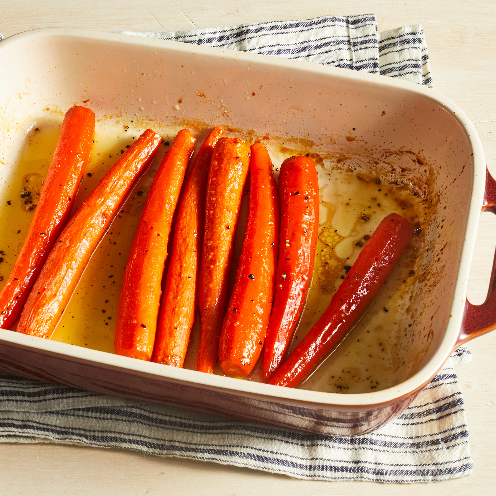

Honey Roasted Carrots

Description
Whether you need a tasty side dish for your holiday dinner or simply for a
weeknight meal, Honey Roasted Carrots are an amazing choice.
The glazed carrots are sweet enough that your picky eaters won't even
realize they're veggies — and you'll feel great knowing they're getting
some nutrients. Plus, they're oh-so-easy to make! It doesn't get much
better than that.
Ingredients
- Carrots
- Honey
- Olive Oil
- Spices (Salt and Pepper)
Directions
-
Choose small- to medium-sized carrots that are all about the same size.
Wash and peel the carrots, then place them in a baking dish.
- Evenly coat the carrots with olive oil, honey, salt, and pepper.
-
Bake until the carrots are tender, about 30 minutes. If you like softer
carrots, add a few extra minutes to the bake time.
Home